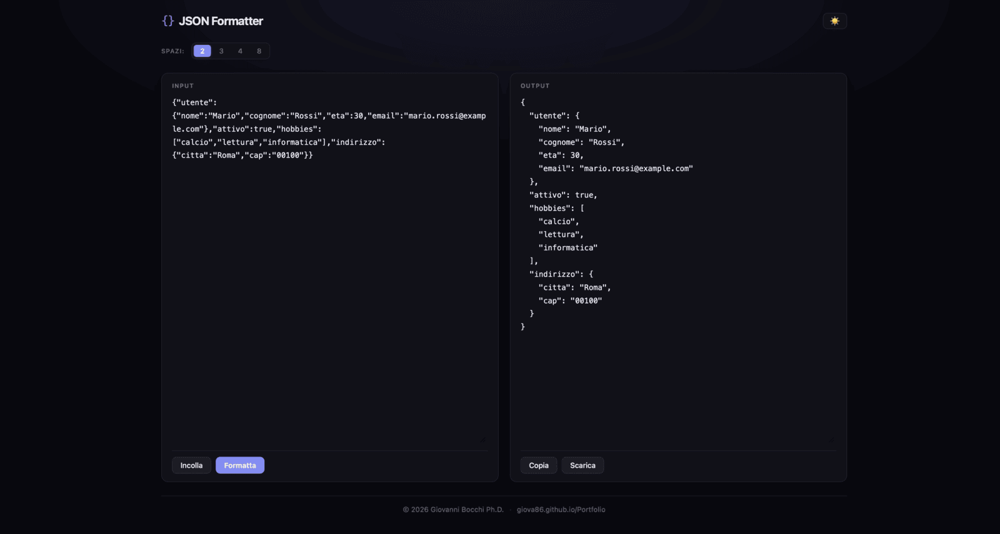

JSON Formatter - Web Application
A clean, minimal web app for formatting and validating JSON, with inline syntax-error reporting.
Python
Flask
React
Vite
A clean, minimal web app for formatting and validating JSON, with inline syntax-error reporting.
JSON Formatter is a small, focused utility for pretty-printing and validating JSON: paste raw JSON on the left, get a formatted, indented version on the right, with any syntax error pointed out at the exact line and column where it occurs.
It was built to be the kind of tool you keep open in a tab: fast, clean and with nothing in the way.

The output can be copied to the clipboard or downloaded straight from the panel. Non-ASCII characters are preserved as they are instead of being escaped, and the two-column view stacks into a single column on mobile.
A React and Vite single-page app talks to a small Flask API with a single endpoint. The back end parses the text with Python's own JSON parser and returns either the formatted result or the position of the error.
Backend language for the Flask API and the JSON parsing/formatting logic.
Exposes the single endpoint that validates and pretty-prints the submitted JSON.
Drives the two-panel interface — input, output, indent selector, and theme toggle.
Dev server and build tool for the React front end, with a proxy to the Flask API during development.